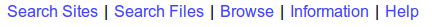

| Previous | Next |
Use GSAC web page tools to start learning about GSAC. GSAC provides forms on web pages to search and retrieve information and data files from a data repository.
The GSAC web user interface has most of the GSAC features. GSAC tools can also be called with programmatic interactions, command line requests or computer program actions, but first learning GSAC with the web pages gives a good understanding of what GSAC can do. You learn the concepts about what GSAC provides; later you can decide which way to call GSAC is best for your needs.
Most of the power of GSAC services can be achieved by the use of web page forms. For access to large numbers of results, such as information about hundreds of stations or to download hundreds of files, use of GSAC by programmatic requests is very effective.
This section shows examples from standard or "Prototype" GSAC implementations. Try using an online GSAC service to learn about GSAC. See the UNAVCO GSAC web site to find a list of active GSAC-enabled data repositories. The GSAC servers at CDDIS, SOPAC, and UNAVCO have special features not included in the standard or "Prototype" GSAC implementations, but you can also use them for learning GSAC. These three GSACs serve repositories with very large and complex data collections, and their GSACs were modified and extended to provide extra controls.
The top of each GSAC web page has this list of links to key sections of the GSAC web site:

Click on one of these to
search for information about sites (stations or monuments) and about instruments at the sites
find and download instrument data files from the sites, such as RINEX files and product files
browse for information by a single item
see information about this particular GSAC server's capabilities (API)
see a synopsis of help using GSAC.
| Previous | Next |